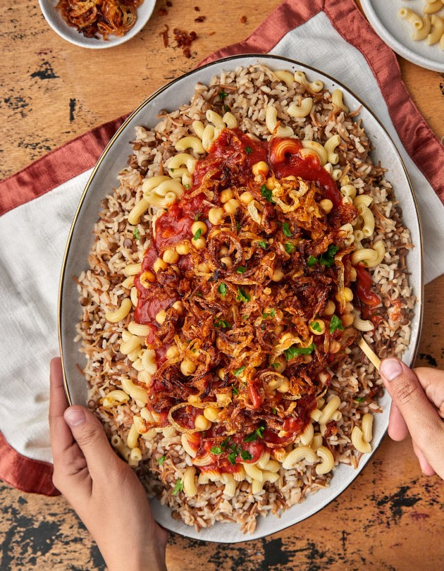
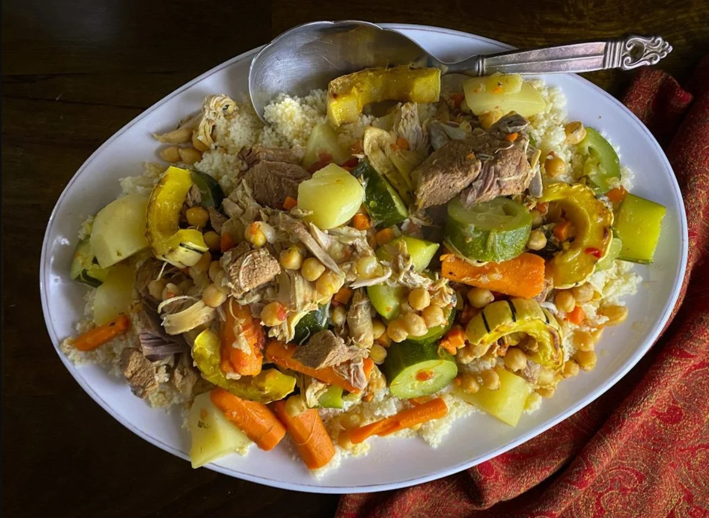

Couscous and semolina
Semolina is used to prepare couscous, a celebrated staple often served with vegetables, meat and flavourful broth.
A meeting of ancient traditions, fragrant spices and rich culinary heritage.

North African cuisine is shaped by centuries of cultural exchange and local traditions. Across Morocco, Algeria, Tunisia, Libya and Egypt, food reflects influences from Amazigh communities, Arab traditions, the Mediterranean and other historical connections.
The region is known for its aromatic spices, slow-cooked stews, couscous, flatbreads, legumes and distinctive combinations of sweet and savoury flavours.
From family gatherings to busy market streets, food remains an important expression of hospitality, identity and community.
North African cooking brings together grains, vegetables, legumes and carefully balanced spices.
Semolina is used to prepare couscous, a celebrated staple often served with vegetables, meat and flavourful broth.
Olive oil is widely used in cooking and contributes to the flavour of many regional dishes and salads.
These legumes are essential ingredients in soups, stews and filling everyday meals.
Tomatoes and peppers form the base of many sauces, salads and slow-cooked dishes.
Dates, raisins and dried apricots appear in desserts and in sweet-and-savoury meat dishes.
Cumin, coriander, cinnamon, paprika and harissa help create the region's distinctive flavours.
Many regional cooking traditions focus on developing flavour through careful preparation, slow cooking and the use of aromatic ingredients.
Tagines and other traditional stews are slowly cooked to develop rich flavours and tender ingredients.
Couscous is traditionally steamed and served with vegetables, meat and broth.
Meats, vegetables and fish are grilled or roasted, often with herbs and spice mixtures.
Ingredients such as cumin, coriander, paprika and cinnamon are combined to create complex regional flavours.
Discover dishes that tell the story of North Africa's diverse culinary traditions.

A slow-cooked dish prepared in a traditional cone-shaped cooking vessel. It combines meat or vegetables with aromatic spices and other ingredients.
Explore the recipe →
A popular Egyptian dish combining rice, pasta and lentils, usually topped with tomato sauce, fried onions and flavourful condiments.
Discover more recipes →
Small steamed granules of semolina traditionally served with vegetables, broth and sometimes meat. It is enjoyed in different forms across North Africa.
Discover more recipes →Explore traditional village cooking, ingredients and food practices through this culinary journey.
This video also visits Azerbaijan and Kyrgyzstan. The Morocco and Tunisia sections are the relevant North African examples.
Continue your culinary journey through the continent's diverse food traditions.